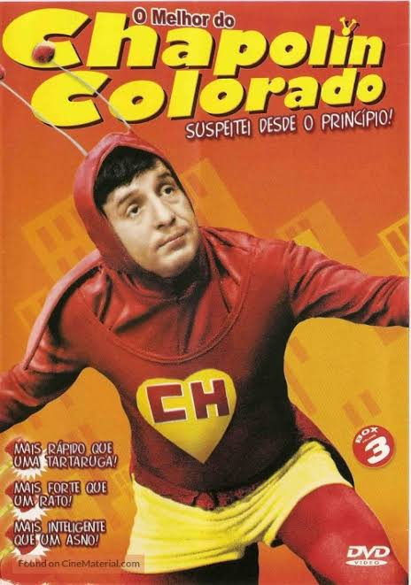
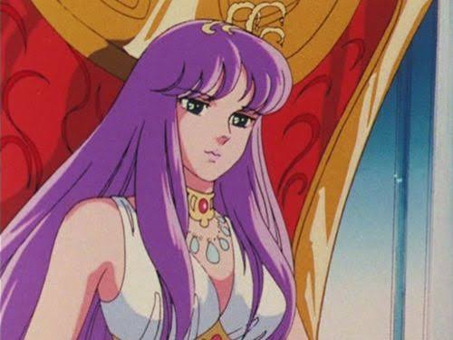

*** CHAVES & CHAPOLIN COLORADO *** |
|
|
Sigam-me os bons! Entre no universo atemporal de Roberto Gómez Bolaños (Chespirito), o criador da Televisa que conquistou corações em toda a América Latina e no Brasil com o humor inocente e cativante de Chaves e Chapolin Colorado! 
O GÊNIO CHESPIRITO E O IMPÉRIO TELEVISA
A história deste fenômeno comecou no México graças ao talento impar de Roberto Gómez Bolaños, apelidado carinhosamente de "Chespirito" (uma aportuguesamento de "Pequeno Shakespeare" devido à sua brilhante habilidade de escrita). Em parceria com a produtora e emissora Televisa, Bolaños revolucionou a televisão latino-americana nos anos 70. Sua obra atravessou fronteiras de maneira avassaladora. No Brasil, transmitido pelo SBT por décadas, Chaves (El Chavo del Ocho) e Chapolin Colorado (El Chapulín Colorado) se transformaram em verdadeiros patrimônios culturais. O humor simples, humanizado e comovente conquistou gerações inteiras no Brasil, México, Argentina, Colômbia e por toda a América Latina, tornando-se uma febre imparável em revistas em quadrinhos (gibis), produtos escolares, desenhos animados e séries de TV. 
A ERA DOS GAMES: RPG, NES, SNES E MEGA DRIVE
O universo do Chapolin e do Chaves possui uma dinâmica perfeita para os videogames! Nos consoles clássicos como **NES (8-bit)**, **Super Nintendo (SNES)** e **Mega Drive (16-bit)**, a estrutura dos episódios parecia um autêntico **RPG de ação e campanha**. O Chapolin Colorado atuava exatamente como o herói de uma grande jornada RPG: chamado por socorro, ele utilizava seus lendários "equipamentos mágicos" como a Marreta Bionica, as Pílulas de Polegarina e a Cornucópia da Buzina Paralisadora. As sagas antológicas do seriado — como o arrepiante confronto no castelo do **Vampiro**, as mansões mal-assombradas, os piratas como Alma Negra e gangues perigosas como Poucas Trancas e Quase Nada — funcionavam como fases de campanha contra chefões lendários em jogos de aventura e exploração!
A FEBRE DAS ROMS E O JOGO TRADUZIDO POR FÃS
O Chapolin no NES e a Comunidade Hack
Assim como aconteceu com os jogos de anime nos anos 90, a internet viu nascer uma verdadeira febre: **jogos do Chaves e Chapolin modificados (Hack ROMs) e traduzidos por fãs**. Grupos de desenvolvedores independentes pegavam jogos clássicos de plataforma do NES e modificavam os *sprites* gráficos, transformando o protagonista no herói de roupa vermelha e amarela! Como o Seriados Reproduziam a Dinâmica de Videogame
A própria estrutura narrativa dos episódios de Chespirito parecia antecipar a lógica das telas de videogame e dos desenhos animados de Cartoon:
|
|
|
© Todos os direitos reservados. Gemini IA ajudou a editar esse conteúdo. |
|